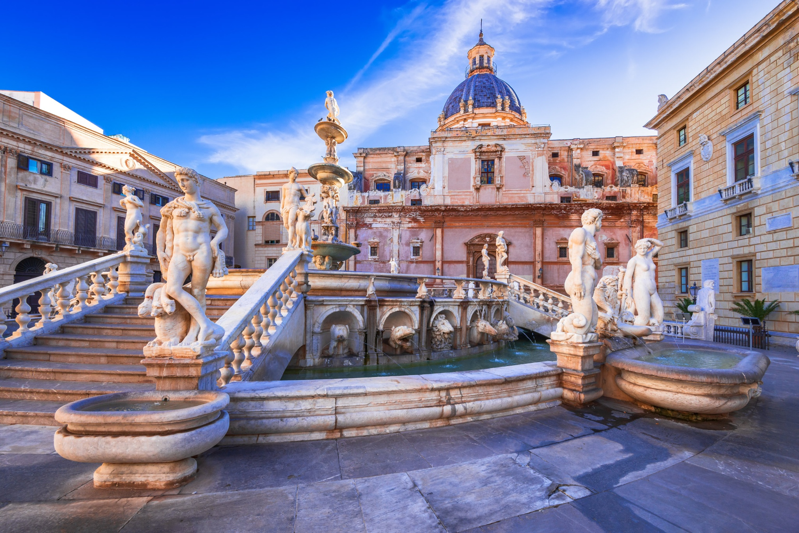

Piazza Pretoria è uno degli spazi più suggestivi e celebri di Palermo, nota al popolo con il soprannome di Piazza della Vergogna, attribuito alla presenza delle numerose statue nude che adornano la grande fontana rinascimentale al suo centro. Un nome che racconta la pudicizia dei palermitani dell'epoca, rimasti scandalizzati dall'audacia delle forme scolpite.
La fontana fu realizzata originariamente dal fiorentino Francesco Camilliani intorno al 1554 per adornare il giardino di una villa privata a Firenze. Acquistata dal Senato palermitano nel 1573 e trasportata in Sicilia pezzo per pezzo, fu riassemblata e inaugurata nella piazza nel 1574. L'opera è composta da oltre seicento elementi scultorei: figure mitologiche, animali, mostri marini e tritoni si alternano su terrazze concentriche digradanti verso il centro.
La piazza è incorniciata da edifici di grande prestigio storico: la Chiesa di Santa Caterina d'Alessandria, il Palazzo delle Aquile — sede del Municipio di Palermo — e la Chiesa di San Giuseppe dei Teatini. L'insieme forma uno dei luoghi più fotografati e visitati dell'intera isola, cuore pulsante del centro storico palermitano.